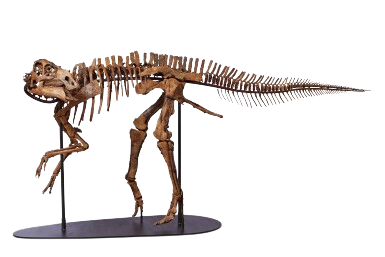

The Gryposaurus is a Hadrosauridae that has a size of 8-9 meters, or approximately 24-27 feet, in length. A Gryposaurus stood a massive 3 meters tall.[2] A Gryposaurus on the younger end is known to be around 8 to 9 feet in length.[4] The Gryposaurus may have included multiple species or subspecies, as there were multiple that had variations in their skull crests. Its neck is also quite flexible, allowing it to reach vegetation at various heights.[7]It is also known as a duck billed dinosaur, as its mouth was suited for specifically chewing vegetation.[2]They lived in upland swamps and floodplain environments.[6] The Gryposaurus was a unique species, as it could switch between quadrupedal and bipedal stances, giving it an advantage over other dinosaur species when collecting food.[2]They ate a wide range of plants, such as ferns, cycads, and conifers. Its dental batteries were arranged in such a way as to maximize its efficiency when eating tough vegetation.[7] Their remains were discovered around the United States and Canada[1], which is around where the Western Interior Seaway was.[2]They were also believed to have lived in riverine forests and coastal plains.[7] The Gryposaurus lived in the late Cretatious period, approximately 71 to 86 million years ago.[2] There were many different dinosaurs living in the time period, including the Bambiraptor, the Dreadnoughtus, and the Hadrosaurus.[1]
The Gryposaurus was named by Lawrence Morris Lambe and found by George Fryer Sternberg in 1913. Although some years prior a different archaeologist, Barnum Brown, had found smaller portions of it, calling it a Kritosaurus. Eventually, after hearing the description of it, Brown agreed that the two species would be called Gryposaurus. A different paleontologist named William Park had found a nearly complete skeleton, and also called it a Kritosaurus. And after Richard Swann Lull and Nelda E. Wright published a monograph on “Hadrosaurian Dinosaurs in North America,” the Gryposaurus would be referred to as Kritosaurus for the next half century.[4] The Gryposaurus had likely used their nasal arches to communicate with each other. This is assumed only because it is also assumed that they had air sacs on both sides of their hump.[8] It is also known that the Gryposaurus had laid eggs to reproduce.[10] The Gryposaurus was a dinosaur that had stayed in herds as a protection from predators.They may have also had intra-species conflicts.They also use a bony crest on their snout as a way of species recognition and display purposes.[7]
| Picture | Description | |
|---|---|---|
| Gryposaurus Habitat | This image has a small portion of the gryposaurus habitat, which appears to be a forested portion of a flood plain | |
| Gryposaurus Fossils |  | This gryposaurus skeleton had been put together to what is estimated to be its shape. |
| Distribution Map of the Gryposaurus | There was a large number of gryposaurus's found along the border of the United States and Canada, though there were a few that had been found in southern United States and in Canada. |